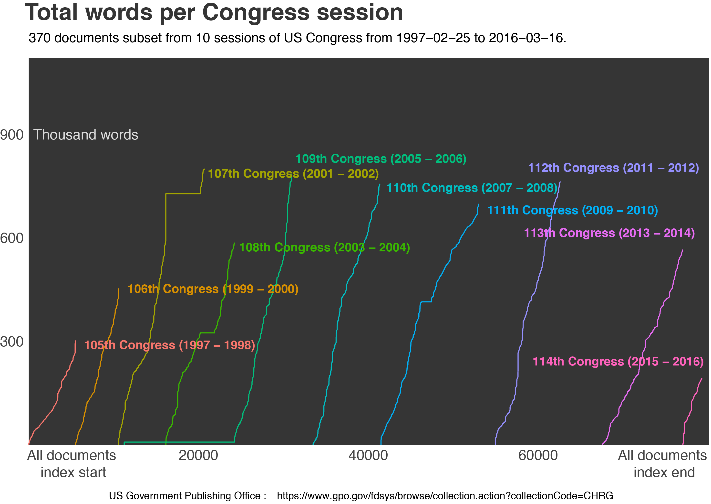

- Per hearing
- Per chamber (House/Senate)
- Per committee etc.
Final graphical findings of research
The final sample included roughly 370 documents.
The sample included comparable volume of words in each congress session.
People with titles other than "Mr", "Ms" and "Mrs" have caused quite a substantial amount of laughter. Such titles were "Senator", "Chairman", "Secretary" and so on.
When such cases are isolated, men still dominate in causing laughter in Congress.
Even though men do have an established presence in Congress as reflected in the number of words said in hearings, women have said more words in two committees.
Working graph prototypes
While the full scale model is currently being setup, some of the initial graphs are listed below. A sample of 24 documents was used resulting in a cleaned up 400k row data frame. Full set includes 25k documents and will constitute approximately half a billion rows.
Some general observations.


More granular data - dealing with congressmen.

And finally some laughter.
Some of ggrepel is working
Only the general stuff though - there is probably something wrong with unused levels (causes infinite recursion).